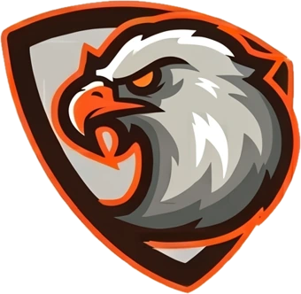
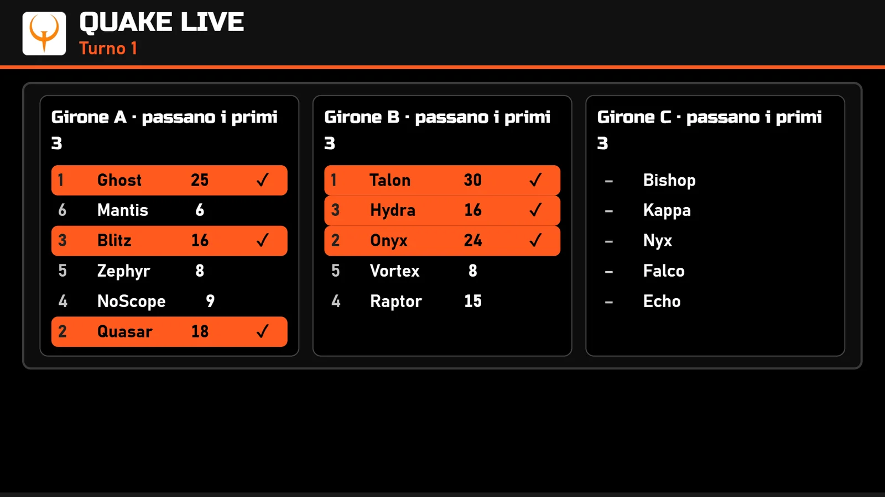
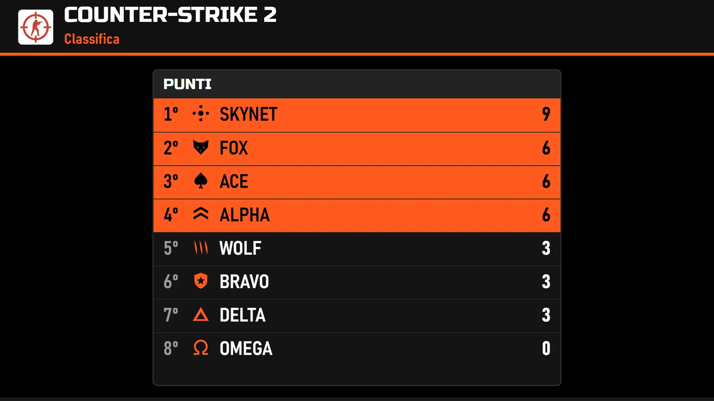
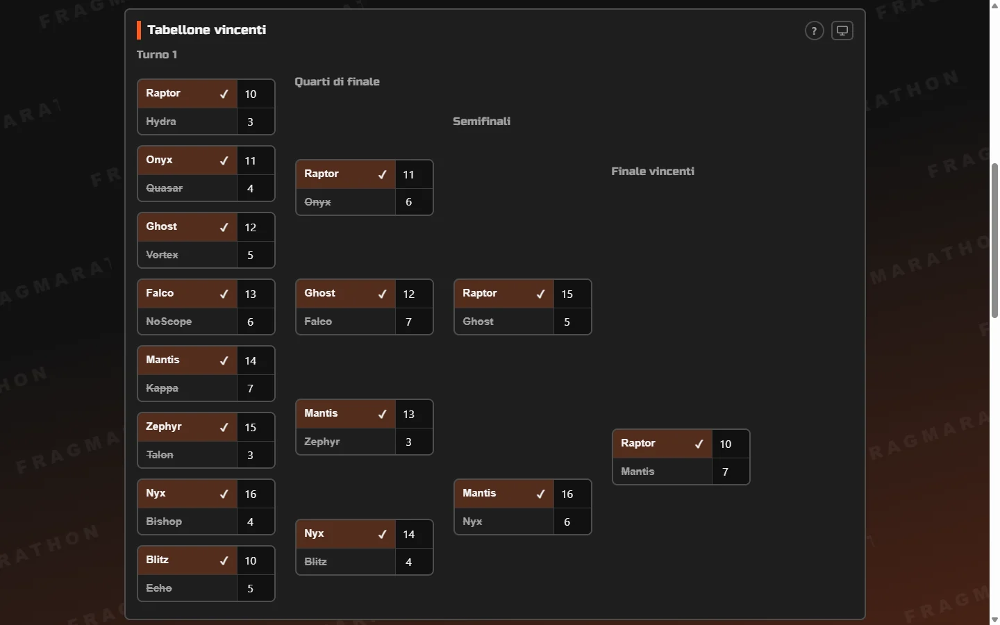
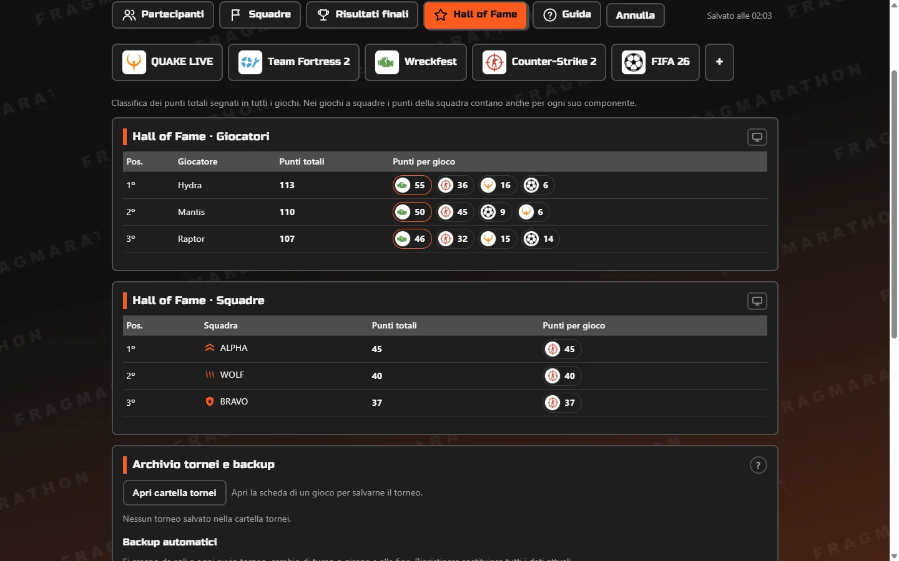

Tornei FragmarathonIl gestore di tornei della LAN party Fragmarathon. Cinque formati, uno schermo per il proiettore che si legge da più di 5 metri, tutto offline.

Scegli il formato per ogni gioco. Il programma fa il sorteggio, calcola classifiche e qualificati e ti chiama solo quando serve una decisione.
Tutto il girone gioca nella stessa partita e passano i migliori, turno dopo turno fino alla finale. Gironi di qualsiasi dimensione, bilanciati da soli.Per Quake, giochi di corse, battle royale.
Chi perde esce. Bye automatici quando i partecipanti non bastano e finale per il terzo posto.Per i playoff e i tornei veloci.
Si esce alla seconda sconfitta: tabellone vincenti, tabellone perdenti, finale e "bella" se vince chi risale dai perdenti.Il formato di EVO e dei picchiaduro.
Ogni turno mette di fronte chi ha un punteggio simile, senza rivincite. Spareggio Buchholz e playoff tra i primi 2, 4, 8 o 16.La fase a gruppi dei Major di Counter-Strike.
Tutti contro tutti, a giornate. Vittoria 3 punti, pareggio 1, poi playoff facoltativi tra i migliori di ogni girone.Per FIFA e i campionati.

Il proiettore ha una finestra tutta sua. Con un secondo schermo collegato si apre lì, già a tutto schermo, mentre tu continui a inserire i risultati sul portatile.
Sposta giocatori e squadre tra gironi e partite con il mouse, finché non ci sono risultati.
Ogni torneo si salva in Documenti e si riprende da un elenco. Il file si aggiorna da solo.
Quando cambia il turno o il girone parte un backup automatico. Ripristini con due clic.
Il pulsante ? e il tasto F1 aprono la spiegazione della finestra in cui sei.
La classifica dell'evento con i punti di ogni gioco, per giocatori e squadre.
La versione installata scarica le nuove versioni e le installa alla chiusura.


Dal pulsante qui sopra o dalla pagina delle versioni.
Si installa da solo, crea l'icona sul desktop e si apre. Non chiede la password da amministratore.
Le cartelle per tornei e backup si creano al primo avvio. Scrivi i partecipanti e premi START.
L'installer non ha ancora una firma digitale. Se Windows mostra Windows ha protetto il PC, scegli Ulteriori informazioni e poi Esegui comunque.